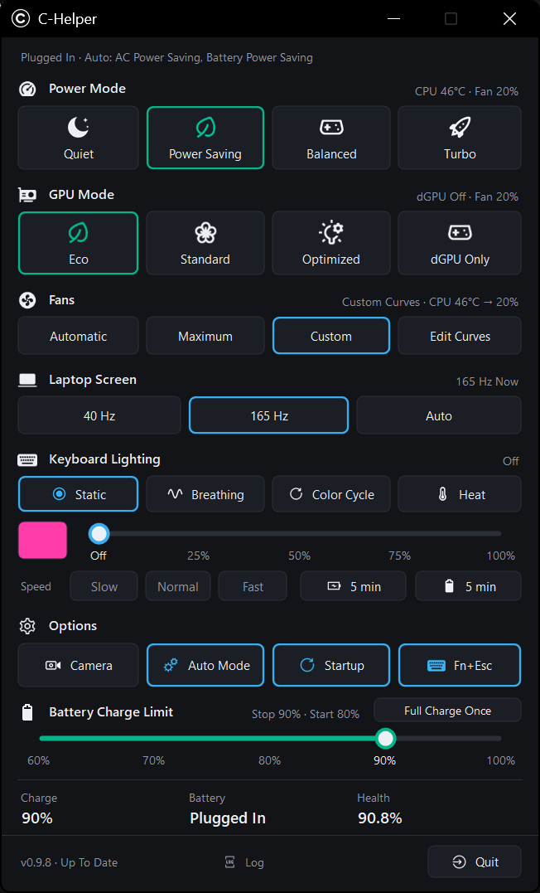

C-Helper replaces the vendor Control Center with one small tray app: power modes, GPU modes, fan curves, keyboard lighting, battery charge limit and Fn keys. No background services, no Store apps.

The EVOL P15 is a great laptop, but its Control Center isn't one app. It's nine separate Store apps, two background services, a launcher that runs at every sign-in and a keyboard filter driver, just to switch a power mode or change the keyboard colour.
And it got in the way. Every time I switched to Power Saving, the screen dropped back to 40 Hz, and I had to set 165 Hz again by hand. Every single time.
I wanted what G-Helper gives ASUS owners: one small window that does the job and stays out of the way. So I worked out how the laptop talks to its firmware and built C-Helper around that.
Same BIOS power modes and GPU modes underneath. The difference is everything around them.
| Stock Control Center | C-Helper | |
|---|---|---|
| What gets installed | 9 Store apps, 2 background services, a sign-in launcher and a keyboard filter driver | One app and a ~7.5 MB installer |
| Running in the background | Services and helpers start with Windows | One tray app; memory trimmed when the window is closed |
| Power & GPU modes | Eco GPU tied to Power Saving | Independent: any power mode with any GPU mode |
| Fans | BIOS behaviour per mode | BIOS behaviour, Maximum, or your own CPU and GPU curves for each power mode |
| Keyboard lighting | Colour and brightness | Static, Breathing, Color Cycle and Heat (follows CPU or GPU temperature), plus a backlight timer for charger and battery |
| Battery | Charge limit | Charge limit, Full Charge Once for trips, live watts and battery health |
| Plugging in / unplugging | Manual | Auto Mode switches power mode, GPU mode and refresh rate for you |
| Screen refresh rate | Drops to 40 Hz every time you switch to Power Saving | Stays where you set it: 40 Hz, 165 Hz, or Auto (165 Hz on charger, 40 Hz on battery) |
| Windows power mode | Separate setting | Set to match each power mode |
| Updates | Through the Store, app by app | Checks GitHub daily; one click installs and verifies the update |
Everything the stock app does day to day, plus the things I missed.
Quiet, Power Saving, Balanced and Turbo, the same BIOS profiles as stock, with an on-screen popup.
Eco, Standard, Optimized and dGPU Only. Optimized turns the RTX 4060 off on battery and on when plugged in.
Your own CPU and GPU curves for each power mode, with presets and safety limits.
Colour, brightness and effects, including Heat that turns warmer as the CPU or GPU heats up.
Charge limit from 60 to 100 %, Full Charge Once, live charge and discharge watts, battery health.
40 Hz, 165 Hz or Auto. Your choice survives power mode changes, sleep and plugging in.
One power mode for the charger and one for battery. C-Helper switches the moment you plug in or unplug.
Fn keys, Caps / Num Lock, camera and touchpad popups, read straight from the BIOS.
Checks GitHub once a day. One click downloads the new version, checks it and installs it.
Takes a minute. Settings are kept when you update.
Get CHelper-Setup-x.y.z.exe from the latest release on GitHub.
It adds the .NET runtime and the firmware bridge driver if they're missing, and can start C-Helper at sign-in.
Optional, but C-Helper is built to replace it. Fn keys keep working without it.
C-Helper is free and always will be. If it made your laptop nicer to use, you can buy me a coffee over UPI.
atharvaagnihotri@upi
Pay With UPI